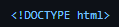

3. Comando Parágrafo Básico
O Comando ''
'' é indispensável, pois é com ele que muitas informações são adicionadas ou implantadas nos códigos e textos e sites
[ Texto a ser inserido ]
O comando HTML é utilizado para estruturar a página da web. Com ele, definimos os títulos, parágrafos, imagens e links. Cada elemento é representado por tags.
O CSS é utilizado para estilizar os elementos HTML. Com ele, podemos definir cores, fontes, tamanhos e posicionamentos. O CSS trabalha em conjunto com o HTML.
O Comando ''
'' é indispensável, pois é com ele que muitas informações são adicionadas ou implantadas nos códigos e textos e sites
[ Texto a ser inserido ]